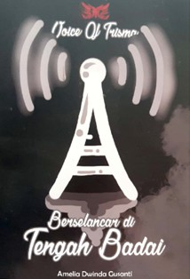
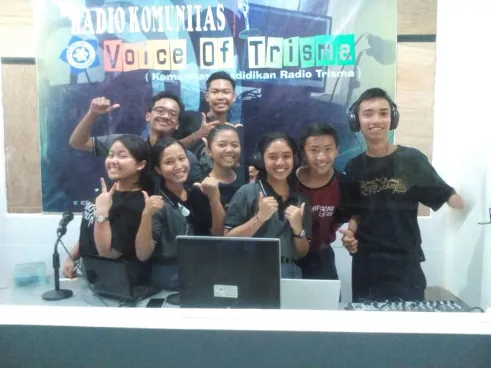
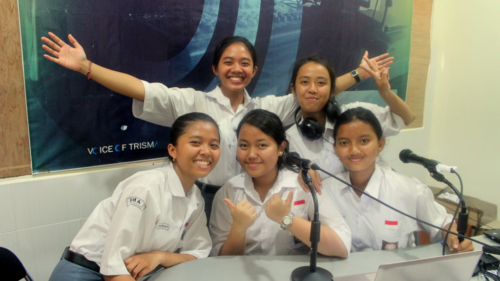

Radio Voice of Trisma (VoT) bukan sekadar media siaran sekolah biasa. Dikelola oleh siswa-siswi yang tergabung dalam ekstrakurikuler Madyapadma Journalistic Park di SMA Negeri 3 Denpasar, VoT memiliki sejarah panjang yang merekam semangat belajar, daya juang, dan kreativitas pelajar dalam menghadapi tantangan teknologi penyiaran.
Awal Mengudara di Jalur Analog (2002)
Perjalanan VoT dimulai pada tahun 2002. Pada masa itu, VoT hadir sebagai radio komunitas di Bali yang mengudara secara analog melalui jalur frekuensi 107.9 FM. Kehadirannya menjadi wadah awal bagi siswa-siswi SMAN 3 Denpasar untuk mempraktikkan langsung ilmu jurnalistik radio, public speaking, dan manajemen penyiaran.
Masa Vakum: Berselancar di Tengah Badai

Perjalanan di jalur FM tidak selamanya mulus. Menginjak tahun keempat mengudara, VoT terpaksa menghentikan siarannya. Kendala utama yang dihadapi adalah masalah teknis terkait sinyal dan regulasi frekuensi yang terlalu berdekatan (bentrok) dengan stasiun radio lain.
Masa-masa penuh tantangan, transisi format, dan upaya bangkit dari masa vakum ini menjadi momen bersejarah yang diabadikan dalam sebuah buku berjudul "Voice of Trisma: Berselancar di Tengah Badai". Buku tersebut menjadi simbol perjuangan radio komunitas pendidikan ini untuk tetap bertahan.
Lahirnya Radio Online dan KBRF (2014)
Menolak menyerah pada keterbatasan frekuensi analog, Madyapadma Journalistic Park memposisikan ulang VoT untuk menyesuaikan diri dengan perkembangan teknologi. Pada tahun 2014, VoT resmi bertransformasi menjadi radio online berbasis internet. Peluncurannya diresmikan langsung oleh Komisi Penyiaran Indonesia Daerah (KPID) Bali.
Bersamaan dengan kebangkitan ini, VoT melahirkan inovasi KBRF (Kantor Berita Radio Feature). VoT tidak lagi hanya sekadar memutar musik hiburan, tetapi berfokus pada produksi berita radio (feature radio) yang segar dan sesuai kaidah jurnalistik. KPID Bali bahkan menaruh harapan agar VoT menjadi percontohan pengembangan berita radio komunitas di Bali.
Semangat "Masih Ada Asa" (2016)

Pada tahun 2016, sistem live-streaming internet VoT semakin dihidupkan dengan mengusung slogan penyemangat: "Voice of Trisma: Masih Ada Asa". Di fase ini, para pengelola yang berstatus pelajar menghadapi tantangan membagi waktu, latihan, dan menguasai alat-alat siaran digital secara otodidak. Kerja keras ini membuahkan kebanggaan internal yang melahirkan station call ikonis mereka: "VOICE OF TRISMA THE BEST ONLINE RADIO IN BALI". Jejak digital mereka juga terus diperluas, salah satunya melalui publikasi konten audio di platform SoundCloud.

Identitas dan Karakter VoT Saat Ini
Melewati berbagai rintangan tersebut, VoT kini berdiri tegak dengan identitas yang kuat:
- Visi: "Radio Penyiaran Komunitas Pendidikan yang Edukatif, Komunikatif, Informatif, Kreatif, dan Ekspresif"
- Tagline: "Mencerdaskan, Meremaja, dan Menghibur"
- Sapaan Pendengar: "Sobat Trisma"
Eksplorasi Program Acara
Sebagai wujud dari visi tersebut, VoT saat ini memproduksi 14 program acara unggulan yang mengedepankan keseimbangan antara edukasi dan hiburan:
Mengudara Tanpa Batas
Saat ini, siaran VoT dapat diakses oleh siapa saja di seluruh dunia melalui aplikasi Klik Radio (tersedia di Playstore dan App Market).
- Senin–Kamis: 17.00 – 18.00 WITA
- Jumat–Sabtu: 16.00 – 18.00 WITA
Sesuai dengan kearifan lokal Bali yang dijunjung tinggi oleh sekolah, setiap akhir siaran selalu ditutup dengan pemutaran Puja Tri Sandhya tepat pada pukul 18.00 WITA.